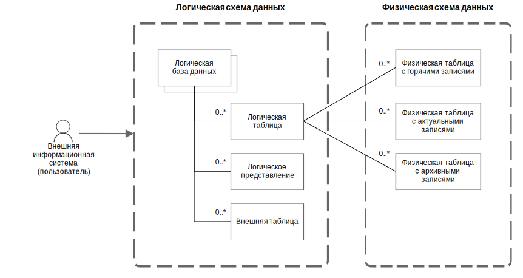

Логическая схема данных — внешнее представление структуры данных окружения, единое для всех поддерживаемых СУБД хранилища. Логическая схема данных представляет собой иерархию следующих объектов:
Логическая схема данных хранится в сервисной базе данных системы.
На рисунке ниже показана иерархия объектов логической схемы данных.

Объекты логической схемы и их связи с объектами физической схемы
Внешняя информационная система (пользователь) отправляет системе запросы к данным, сформулированные в терминах логической схемы. Система разбирает полученные запросы, модифицирует их нужным образом и перенаправляет к физическим таблицам хранилища данных. В зависимости от момента времени, указанного в запросе, система обращается к актуальным или архивным данным. Такая модель взаимодействия позволяет работать с различными версиями данных, которые хранятся в различных СУБД хранилища, в едином формате.
Связанные разделы: